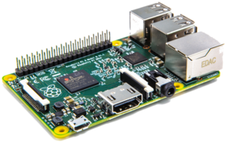
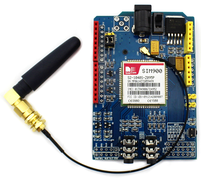
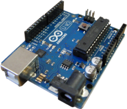
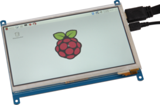
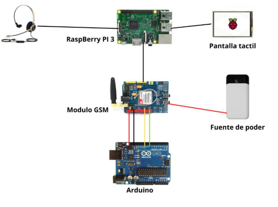

Componentes
Raspberry PI 3
- Placa de microordenador que puede funcionar como una mini computadora.
- Precio: $51.99
Módulo GSM
- Es un módulo universal de comunicación. Sirve para la comunicación a través de la red PSTN.
- Precio: $44
Arduino UNO
- Es una placa programable, servirá para definir la comunicación entre el Raspberry y el módulo GSM.
- Precio: $20
Pantalla táctil de RaspBerry
- Pantalla para interactuar con el Raspberry.
- Precio: $73.99
Auriculares
- Auriculares USB para poder realizar las llamadas.
- Precio: $5
Fuente de poder
- Fuente de poder para mantener con energía el módulo GSM.
- Precio: $5
Servidor Asterisk
- Computadora con SO Linux que cumplirá la función de servidor Asterisk.
MicroSD
- Memoria MicroSD que contendra el SO para la RaspBerry
- Precio: $4
Software utilizado
¿Cómo se hace?

Esquema de teléfono VoIP:
Se procedera a la conexión respectiva entre los componentes
- Raspberry PI.
- Arduino UNO
- Módulo GSM
- Pantalla táctil
- Fuente de poder

Instalación de Raspbian
- Entrar a raspberrypi.com/software/ para descargar la herramienta de instalación.
- Esa herramienta se encarga de instalar raspbian.
- A continuación se presenta la siguiente pantalla

- En la herramienta damos en "CHOOSE OS"" y seleccionamos el recomendado (Raspberry PI OS (32 bits)


- Despues en "CHOOSE STORAGE" y seleccionamos la MicroSD. Por ultimo click en "WRITE".
cos@user:~ $sudo rm -rf LCD show
cos@user:~ $git clone https://github.com/goodtft/LCD-show.git
cos@user:~ $chmod -R 755 LCD-show
cos@user:~ $cd LCD-show
cos@user:~ $sudo ./LCD5-show
- Se usan los siguientes comandos para instalar el driver de la pantalla.
- Luego se conecta la pantalla y listo.
Instalación de Driver para pantalla táctil
Instalación de Asterisk en VM
- Como usuario root, Instalamos con el siguiente comando.
cos@user:~ $sudo su
root@user:~ #apt install asterisk
root@user:~ #cd /etc/asterisk/
root@user:~ #cp sip.conf /etc/asterisk/sip.conf.bk
root@user:~ #cp voicemail.conf /etc/asterisk/voicemail.conf.bk
root@user:~ #cp pjsip.conf /etc/asterisk/pjsip.conf.bk
root@user:~ #cp extensions.conf /etc/asterisk/extensions.conf.bk
root@user:~ #rm sip.conf
root@user:~ #nano sip.conf
[general]
context=default
language=es
videosupport=yes
allow=gsm
allow=VP8
allow=h264
[2001]
context=administracion
type=friend
callerid="FatimaAguilar"
username=Fatima
secret=123
nat=no
canreinvite=yes
host=dynamic
maxcalibrate=384
qualify=yes
[2002]
context=administracion
type=friend
callerid="JosueCuellar"
username=Josue
secret=123
nat=no
canreinvite=yes
host=dynamic
maxcalibrate=384
qualify=yes
[2003]
context=administracion
type=friend
callerid="AndresHenriquez"
username=Andres
secret=123
nat=no
canreinvite=yes
host=dynamic
maxcalibrate=384
qualify=yes
[2004]
context=administracion
type=friend
callerid="BenjaminMolina"
username=Benjamin
secret=123
nat=no
canreinvite=yes
host=dynamic
maxcalibrate=384
qualify=yes
[3001]
context=contabilidad
type=friend
callerid="FatimaAgu"
username=Fatim
secret=123
nat=no
canreinvite=yes
host=dynamic
maxcalibrate=384
qualify=yes
[3002]
context=contabilidad
type=friend
callerid="JosueCue"
username=Josu
secret=123
nat=no
canreinvite=yes
host=dynamic
maxcalibrate=384
qualify=yes
[3003]
context=contabilidad
type=friend
callerid="AndresHen"
username=Andre
secret=123
nat=no
canreinvite=yes
host=dynamic
maxcalibrate=384
qualify=yes
[3004]
context=contabilidad
type=friend
callerid="BenjaminMo"
username=Benja
secret=123
nat=no
canreinvite=yes
host=dynamic
maxcalibrate=384
qualify=yes
root@user:~ #nano extensions.conf
; append extensions
[administracion]
exten => 2001,1,Dial(SIP/2001,30,Ttm)
exten => 2001,2,Hangup()
exten => 2002,1,Dial(SIP/2002,30,Ttm)
exten => 2002,2,Hangup()
exten => 2003,1,Dial(SIP/2003,30,Ttm)
exten => 2003,2,Hangup()
exten => 2004,1,Dial(SIP/2004,30,Ttm)
exten => 2004,2,Hangup()
include => administracion
[contabilidad]
exten => 3001,1,Dial(SIP/3001,30,Ttm)
exten => 3001,2,Hangup()
exten => 3002,1,Dial(SIP/3002,30,Ttm)
exten => 3002,2,Hangup()
exten => 3003,1,Dial(SIP/3003,30,Ttm)
exten => 3003,2,Hangup()
exten => 3004,1,Dial(SIP/3004,30,Ttm)
exten => 3004,2,Hangup()
include => contabilidad
root@user:~ #nano queues.conf
autofill = yes
root@user:~ #service asterisk restart

Configuración de módulos de RaspBerry
Configuración Raspberry con GSM
- En la raspberry Instalamos los servicios de comunicacion serial.
cos@user:~ $sudo apt-get install pyserial
cos@user:~ $sudo apt-get install minicom
0
- Luego escribimos en la consola minicom:
AT
“OK”
Comando para llamada: ATD XXXXXXX
Comando para colgar: ATH
Comando para contestar llamadas: ATA


Configuracion raspberry con SIP (Linphone)
- En la raspberry usamos los comandos para instalar Linphone.
cos@user:~ $sudo apt-cache search linphone
cos@user:~ $sudo apt-get install linphone
Dirección SIP: sip:2003@192.168.0.17
Dirección del servidor SIP: sip:192.168.0.17;transport=udp
Duración de registro(seg): 600
Transporte: UDP
- Se configura el usuario con la IP de la VM con el servidor Asterisk. Lo de transport cambia automatico con la siguiente opción: Transporte: UDP.
- Seleccionamos el usuario que se ha creado.
- Aquí vemos nuestra pantalla con todas las configuraciones completas